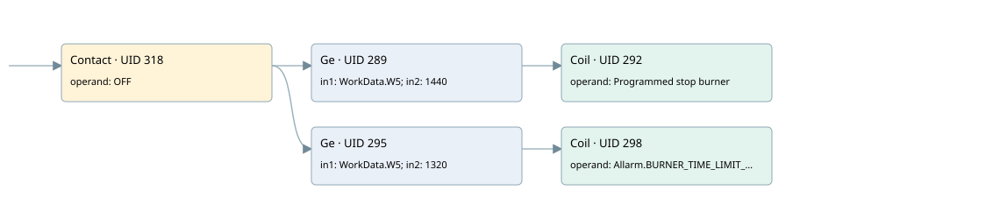

programmed burner shutdown every 24 hours
burner control · 검색 색인 순서 8 · 원본 내부 NID 추정 7
백업 PLF 원본의 2685009 바이트 위치에서 복원한 XML. 검색 문서 1861의 객체 키 16102200d910000000000000와 연결했다. 이름 해석 7/7개. 남은 RefId는 상수 또는 미해석 참조다.
연결 구조 다시 그리기
원본 Part/PCon/Wire를 이용한 연결도다. TIA 화면의 래더 배치 또는 실행 결과를 재현한 그림은 아니다. 핀 연결은 아래 표와 원본 XML을 기준으로 읽는다. 노드 위에 마우스를 두면 피연산자 이름을 볼 수 있다.

접점·코일·블록과 피연산자
| Part UID | Gate | Negated 핀 | 연결 피연산자 |
|---|---|---|---|
| 318 | Contact | operand = OFF | |
| 289 | Ge | in1 = WorkData.W5; in2 = 1440 | |
| 292 | Coil | operand = Programmed stop burner | |
| 295 | Ge | in1 = WorkData.W5; in2 = 1320 | |
| 298 | Coil | operand = Allarm.BURNER_TIME_LIMIT_22H |
접점 경로를 펼친 조건식
Contact·O/A·비교기의 원본 연결을 읽기 쉽게 펼친 보조 해석이다. POWER는 전원 레일 시작을 뜻한다. 호출 블록·에지·타이머의 내부 동작과 다중 쓰기 순서는 이 표로 실행 검증하지 않았다. 미해석 핀과 RefId는 원문 연결표에서 확인한다.
| UID | 동작 | 대상 | 원본 접점 경로 | 내용 |
|---|---|---|---|---|
| 292 | Coil | Programmed stop burner | (OFF AND [WorkData.W5 >= 1440]) | 조건에 따른 Coil 기록 |
| 298 | Coil | Allarm.BURNER_TIME_LIMIT_22H | (OFF AND [WorkData.W5 >= 1320]) | 조건에 따른 Coil 기록 |
원본 배선 연결
| Wire UID | 동일 Wire 연결 끝점 |
|---|---|
| 320 | Powerrail {} ↔ Part 318.in |
| 23 | ORef 24 (OFF) ↔ Part 318.operand |
| 319 | Part 318.out ↔ Part 289.pre ↔ Part 295.pre |
| 307 | ORef 300 (WorkData.W5) ↔ Part 289.in1 |
| 308 | ORef 301 (1440) ↔ Part 289.in2 |
| 309 | Part 289.out ↔ Part 292.in |
| 311 | ORef 302 (Programmed stop burner) ↔ Part 292.operand |
| 312 | ORef 303 (WorkData.W5) ↔ Part 295.in1 |
| 313 | ORef 304 (1320) ↔ Part 295.in2 |
| 314 | Part 295.out ↔ Part 298.in |
| 316 | ORef 305 (Allarm.BURNER_TIME_LIMIT_22H) ↔ Part 298.operand |
식별자 해석 근거 7개
| ORef UID | RefId | 이름 | IdentXmlPart 파일 | 해석 방법 |
|---|---|---|---|---|
| 24 | 80 | OFF | 0582-IdentXmlPart.xml | UID/RID + search-text + NID agreement |
| 300 | 48 | WorkData.W5 | 0585-IdentXmlPart.xml | UID/RID + search-text + NID agreement |
| 301 | 53 | 1440 | 0586-IdentXmlPart.xml | literal candidate: UID/RID/NID + nearby named declarations + search-text agreement |
| 302 | 54 | Programmed stop burner | 0582-IdentXmlPart.xml | UID/RID + search-text + NID agreement |
| 303 | 48 | WorkData.W5 | 0585-IdentXmlPart.xml | UID/RID + search-text + NID agreement |
| 304 | 55 | 1320 | 0586-IdentXmlPart.xml | literal candidate: UID/RID/NID + nearby named declarations + search-text agreement |
| 305 | 56 | Allarm.BURNER_TIME_LIMIT_22H | 0585-IdentXmlPart.xml | UID/RID + search-text + NID agreement |
검색 코드 보조 자료
참조 명칭을 찾기 위한 자료이며 실행 순서나 AND/OR 관계는 위 연결표로 확인한다.
"off" "workdata".w5 1440 "programmed stop burner" "workdata".w5 1320 "allarm".burner_time_limit_22h